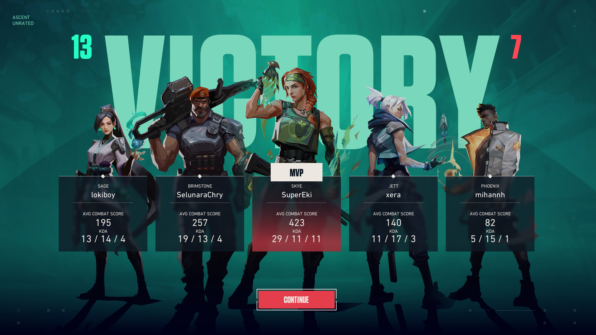
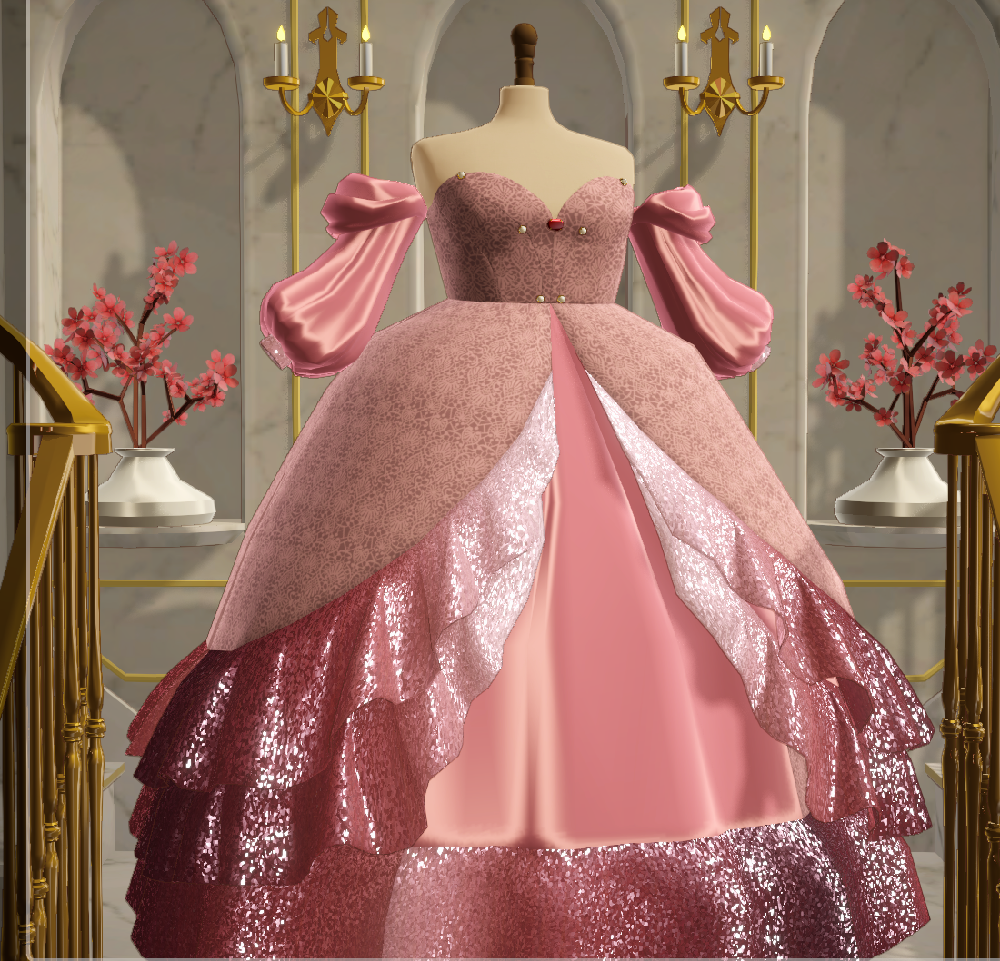

~INFORMATION~
Full name: Jan Missy A. Arriesgado
Nickname: Missy
Birthdate: January 1, 2001
Age: 25 Years Old
Birthplace: Iligan City Philippines
~EDUCATION~
University: Mindanao State University - Iligan Institute of Technology
Degree: Bachelor of Science in Nursing
Year level: 4th Year
Expected Graduation Year: 2027
Why did you choose your course?: I chose this course because I want to be able to work at a hospital ever since I was a kid and I wanted to help my familyif ever there are medical situations that arises.
~FAMILY~
How many siblings do you have?: I am adopted, I have a twin sister that is also adopted to another family, so I am an only child.
What is something your family has taught you?: We should be courteous, stay humble, remember our beginnings and never forget the reason why you started to pursue your passion. Surrender your worries to God and to have confidence in yourself.
~PERSONALITY~
How would you describe yourself?: I describe myself as a shy, introverted person that loves to game and to stay in the hospital especially observe procedures in the Operating room. I love to try out new hobbies but always tend to stop midway and will pick it up after a few months. I get scared easily so horror movies are hard to watch, and I love to appreciate art in many forms
What are your strengths?: My strenghts would be my talents, I tend to be in the corner but when I am allowed to showcase my interest and hobbies I do my best to give a good performance.
What is something you want to improve about yourself?: I want to be able to try new things boldly, to share my thoughts clearly to others without having the anxious feeling of being judged and to be able to avoid procrastination.
~HOBBIES~
What are your hobbies?: I love to Dance, cosplay, game and try out new arts and crafts, and to listen to music
Games I play:




Favorite food: Chicken and Buldak Noodles
Favorite color: Black
Favorite music genre:Pop, Jazz, Classical and K-pop (BTS)
Favorite game: Overwatch